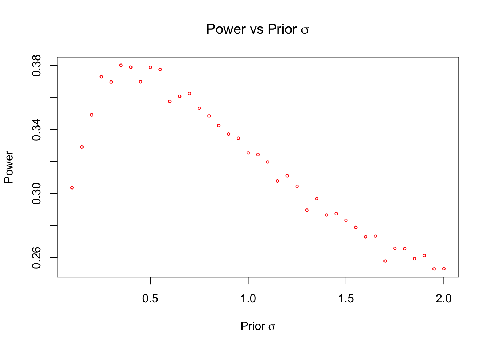
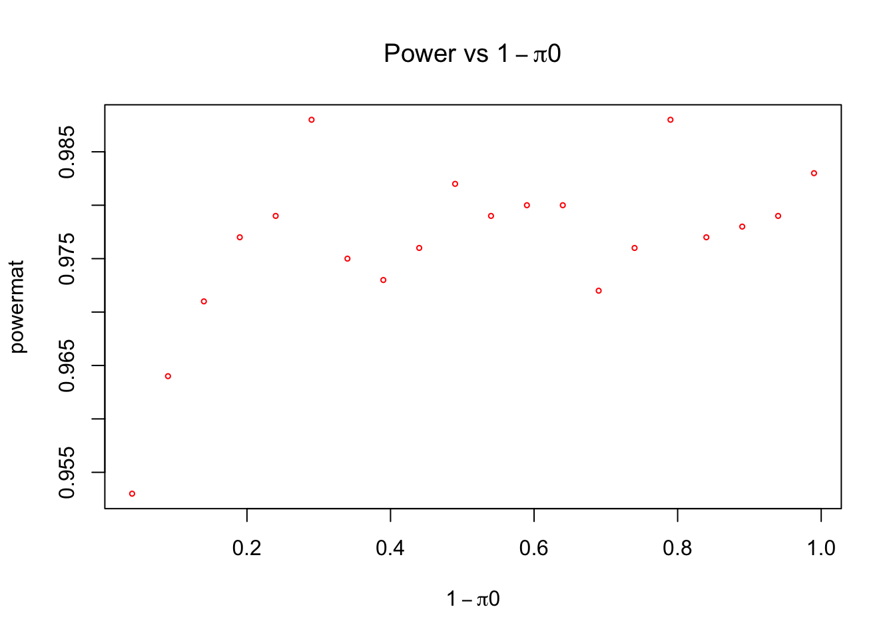

Simulating Power
Last updated: 2019-12-27
Checks: 6 1
Knit directory: nejm/
This reproducible R Markdown analysis was created with workflowr (version 1.4.0). The Checks tab describes the reproducibility checks that were applied when the results were created. The Past versions tab lists the development history.
Great! Since the R Markdown file has been committed to the Git repository, you know the exact version of the code that produced these results.
Great job! The global environment was empty. Objects defined in the global environment can affect the analysis in your R Markdown file in unknown ways. For reproduciblity it’s best to always run the code in an empty environment.
The command set.seed(20190606) was run prior to running the code in the R Markdown file. Setting a seed ensures that any results that rely on randomness, e.g. subsampling or permutations, are reproducible.
Great job! Recording the operating system, R version, and package versions is critical for reproducibility.
Nice! There were no cached chunks for this analysis, so you can be confident that you successfully produced the results during this run.
Using absolute paths to the files within your workflowr project makes it difficult for you and others to run your code on a different machine. Change the absolute path(s) below to the suggested relative path(s) to make your code more reproducible.
| absolute | relative |
|---|---|
| ~/nejm/analysis/ | analysis |
Great! You are using Git for version control. Tracking code development and connecting the code version to the results is critical for reproducibility. The version displayed above was the version of the Git repository at the time these results were generated.
Note that you need to be careful to ensure that all relevant files for the analysis have been committed to Git prior to generating the results (you can use wflow_publish or wflow_git_commit). workflowr only checks the R Markdown file, but you know if there are other scripts or data files that it depends on. Below is the status of the Git repository when the results were generated:
Ignored files:
Ignored: .DS_Store
Ignored: .RData
Ignored: .Rhistory
Ignored: analysis/.DS_Store
Ignored: analysis/.Rhistory
Ignored: docs/.DS_Store
Ignored: docs/figure/.DS_Store
Untracked files:
Untracked: code/scripts.R
Untracked: m_eQTL_bma.rds
Unstaged changes:
Modified: analysis/pi0.Rmd
Modified: analysis/stopdapt.Rmd
Note that any generated files, e.g. HTML, png, CSS, etc., are not included in this status report because it is ok for generated content to have uncommitted changes.
These are the previous versions of the R Markdown and HTML files. If you’ve configured a remote Git repository (see ?wflow_git_remote), click on the hyperlinks in the table below to view them.
| File | Version | Author | Date | Message |
|---|---|---|---|---|
| Rmd | 044a528 | Sarah Urbut | 2019-12-27 | wflow_publish(“~/nejm/analysis/power.Rmd”) |
| html | ca446cd | Sarah Urbut | 2019-12-26 | Build site. |
| Rmd | 2844087 | Sarah Urbut | 2019-12-26 | wflow_publish(“~/nejm/analysis/power.Rmd”) |
| html | 05086d8 | Sarah Urbut | 2019-12-26 | Build site. |
| Rmd | 335ea6d | Sarah Urbut | 2019-12-26 | wflow_publish(“~/nejm/analysis/power.Rmd”) |
Power Analysis
We wish to simulate a non-zero logOR in a study with sample size large enough that the effect can be detected at \(80%\) in a frequentist analysis. To start with, let’s test a situation in which the logOR is actually 1.2, with a population SD of \(0.20\) and a sample size of 100.
The goal is to test our power to estimate the power to detect a true difference (at say, a 0.05 frequentist \(\alpha\) threshold) given that the sampling distribution arises from a mixture normal with \(\pi_{0}\) component on a ‘spike’ at 0, and the slab (or 1- \(\pi_{0}\) componenet) on an alternative compoenent that quantifies our uncertainty about a non-zero estimate of the underlying logOR.
##Simulation of simple power calculation for review, in which we quanitfy the difference between a null and alternaitve distribution and compute how many times the empirical alternative exceeds the rejection region
mean1=0
mean2=seq(0.01,2,by=0.10)
sd=0.2
null=rnorm(10000,mean1,sd)
alternative=rnorm(10000,mean2,sd)
plot(density(null),xlim=c(-1,3))
lines(density(alternative))
abline(v=qnorm(0.975,mean = 0,sd=0.2))
plot(mean2,1-pnorm(qnorm(0.975,mean = 0,sd=sd),mean = mean2,sd=sd))
abline(h=0)In this paper, the standard error \(\hat\sigma\) was 0.21. This means that the rejection region that the logOR is significantly different than 0 at an \(\alpha\) of 0.05 would be +/- 1.96*0.21 = +/- 0.41.
We can sample from our posterior at various levels of \(\pi\) and \(\hat{sigma}\) and compute how often the null is appropriately rejected.
We should sample from the mixture distribution and determine how many times the \(95\%\) credible interval excludes 0 for different choces of \(\sigma\) and \(\pi\), assuming that the observed logOR is the true logOR. We thus seek to determine how frequently a values chosen from posterior distribution excludes CI (but is this ok, using a posterior probability for frequentist sampling?)
In the following script, we simulate for a range of pis and a fixed prior sigma, and compute how many time the posterior mean and variance produce a random variable that correctly rejects alternaitve. Here we plot for a prior sigma of 0.5, as discovered in the bottom sim is the best choice of \(\sigma\).
setwd("~/nejm/analysis/")
source("../code/scripts.R")## scripts to compute posterior mean, variance and posterior weights
##Simulation script
runpisim=function(dm,priorsd,dse,priormean=0,sim=1000){
pi0s=seq(0.01,1,by=0.05)##proportional weight on 0 component
pis=1-pi0s##proportional weight on slab (non0 component)
simmat=matrix(NA,ncol=length(pis),nrow=sim)
for(i in 1:length(pis)){
p1=pis[i]
p=pipost(p1,dataSE=dse,datamean=dm,priorsd=priorsd)###computer posterior weight on nonzero component using chosen prior weight, i.e., p(Z=alternative| data)
s=rbinom(1,n = sim,prob=p)##create a list indexing whether comes from null or real depending on posterior weight, where for each simulation, an RV (0,1) is simulated from Binomial(n=1,size=1) according to posterio weight
pm=sapply(s,function(s){post_mean(priormean=0,priorsd=s*1,datamean=dm,datase=dse)})##depending on whether null or alternative chosen, simulate posterior mean of distribution
ps=sqrt(sapply(s,function(s){post_var(priorsd=s*1,datase=dse)}))##depending on whether null or alternative chosen, simulate posterior mean of distribution
b=sapply(seq(1:length(pm)),function(x){rnorm(1,mean = pm[x],sd=ps[x])})##for each simulation choose a rv according to simulated mean and variance
simmat[,i]=b
}
return(simmat)}
dm=-0.44
dse=0.21
pi0s=seq(0.01,1,by=0.05)##proportional weight on 0 component
pis=1-pi0s
simmat=runpisim(dm = dm,dse = dse,priorsd = 0.5)
powermat=apply(simmat,2,function(x){1-mean(x<0.41&x>-0.41)})
plot(pis,powermat,xlab="PiAlt")
| Version | Author | Date |
|---|---|---|
| 05086d8 | Sarah Urbut | 2019-12-26 |
We can see that the maximal power achieved is roughly 0.5, which is due to the fact that the demonstrated logOR considered here, -0.44, and corresponding standard error, 0.21, are so small, that the maximal posterior probability that they arose from the non-zero component is ~0.08 even with a \(\pi_{alternative}\) of 0.99.
We can also for a given \(\pi\), and consider over all prior \(\sigma^{2}\):
##Simulation script
runSigmasim=function(dm,pi0,dse,minsig=0.1,maxsig=2,inc=0.05,priormean=0,sim=10000){
sigmas=seq(minsig,maxsig,by=inc)
pis=1-pi0##proportional weight on slab (non0 component)
simmat=matrix(NA,ncol=length(sigmas),nrow=sim)
for(i in 1:length(sigmas)){
priorsd=sigmas[i]
p1=pis
p=pipost(p1,dataSE=dse,datamean=dm,priorsd=priorsd)###computer posterior weight on nonzero component using chosen prior weight
s=rbinom(1,n = sim,prob=p)##create a list indexing whether comes from null or real depending on posterior weight, where for each simulation, an RV (0,1) is simulated from Binomial(n=1,size=1) according to posterio weight
pm=sapply(s,function(s){post_mean(priormean=0,priorsd=s*1,datamean=dm,datase=dse)})##depending on whether null or alternative chosen, simulate posterior mean of distribution
ps=sqrt(sapply(s,function(s){post_var(priorsd=s*1,datase=dse)}))##depending on whether null or alternative chosen, simulate posterior mean of distribution
b=sapply(seq(1:length(pm)),function(x){rnorm(1,mean = pm[x],sd=ps[x])})##for each simulation choose a rv according to simulated mean and variance
simmat[,i]=b
}
return(simmat)
}
test=runSigmasim(dm = dm,dse = dse,pi0=0.5)
powermat=apply(test,2,function(x){1-mean(x<0.41&x>-0.41)})
minsig=0.1;maxsig=2;inc=0.05
sigmas=seq(minsig,maxsig,by=inc)
plot(sigmas,powermat,xlab=expression(paste("Prior ",sigma)), ylab="Power", main=expression(paste("Power vs ", pi,"0")) ,pch=1,cex=0.5,col="red")
| Version | Author | Date |
|---|---|---|
| 05086d8 | Sarah Urbut | 2019-12-26 |
Here we can see that the choice of \(\sigma\) matters much more than the choice of \(\pi0\), and that the power of the simulation to detect an effect if it truly exists seems to be maximal with prior \(\sigma^{2}\) of ~ 0.5 and that the maximal power achieved is roughly 50%. THis stems from the fact that even under a situation with \(pi0\) at 0, such a small observed logOR is equally likely to stem from the null as the alternaitve. Let’s examine for larger dm, one that is twice the first.
dm=2*dm
pi0s=seq(0.01,1,by=0.05)##proportional weight on 0 component
pis=1-pi0s
simmat=runpisim(dm = dm,dse = dse,priorsd = 0.5)
powermat=apply(simmat,2,function(x){1-mean(x<0.41&x>-0.41)})
plot(pis,powermat,xlab=expression(paste(pi,"Alternative")), ylab="Power", main=expression(paste("Power vs ", pi,"Alternative")) ,pch=1,cex=0.5,col="red")
| Version | Author | Date |
|---|---|---|
| 05086d8 | Sarah Urbut | 2019-12-26 |
test=runSigmasim(dm = dm,dse = dse,pi0=0.5)
powermat=apply(test,2,function(x){1-mean(x<0.41&x>-0.41)})
minsig=0.1;maxsig=2;inc=0.05
sigmas=seq(minsig,maxsig,by=inc)
plot(sigmas,powermat,xlab=expression(paste("Prior ",sigma)), ylab="Power", main=expression(paste("Power vs ", sigma)) ,pch=1,cex=0.5,col="red")
| Version | Author | Date |
|---|---|---|
| 05086d8 | Sarah Urbut | 2019-12-26 |
WE can see the importance of a larger parameter value, which really only emphasizes the need for such ‘sobriety’ with larger trials. Perhpas we should focus on a trial with a larger demonstrated effect, and show the importance of ‘sobriety’ in cases in which one is eager to reject the null, because I think focusing on power to detect a very small effect when we’re trying to emphasize skepticisim detracts from our focus.
sessionInfo()R version 3.5.2 (2018-12-20)
Platform: x86_64-apple-darwin15.6.0 (64-bit)
Running under: macOS 10.15.1
Matrix products: default
BLAS: /Library/Frameworks/R.framework/Versions/3.5/Resources/lib/libRblas.0.dylib
LAPACK: /Library/Frameworks/R.framework/Versions/3.5/Resources/lib/libRlapack.dylib
locale:
[1] en_US.UTF-8/en_US.UTF-8/en_US.UTF-8/C/en_US.UTF-8/en_US.UTF-8
attached base packages:
[1] stats graphics grDevices utils datasets methods base
loaded via a namespace (and not attached):
[1] workflowr_1.4.0 Rcpp_1.0.1 digest_0.6.20 rprojroot_1.3-2
[5] backports_1.1.4 git2r_0.26.1 magrittr_1.5 evaluate_0.14
[9] highr_0.8 stringi_1.4.3 fs_1.3.1 whisker_0.3-2
[13] rmarkdown_1.14 tools_3.5.2 stringr_1.4.0 glue_1.3.1
[17] xfun_0.8 yaml_2.2.0 compiler_3.5.2 htmltools_0.3.6
[21] knitr_1.23